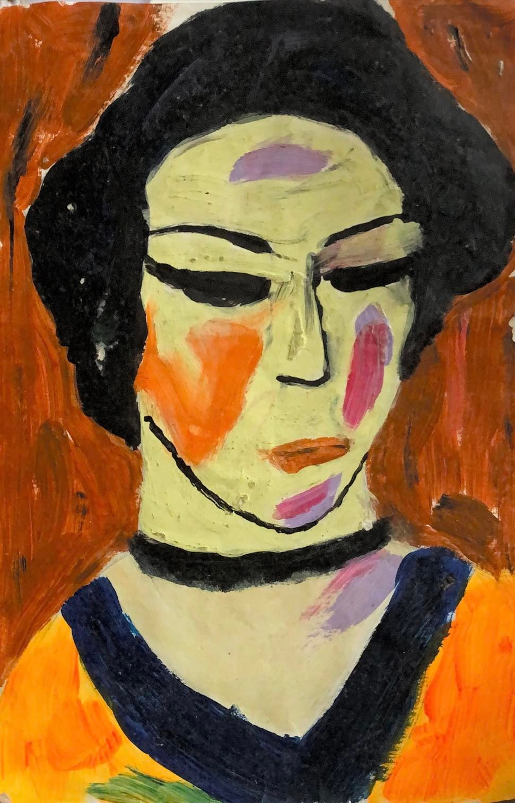
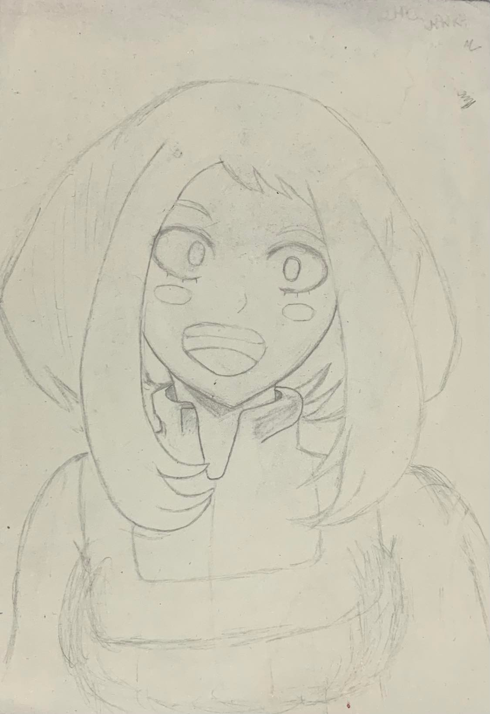
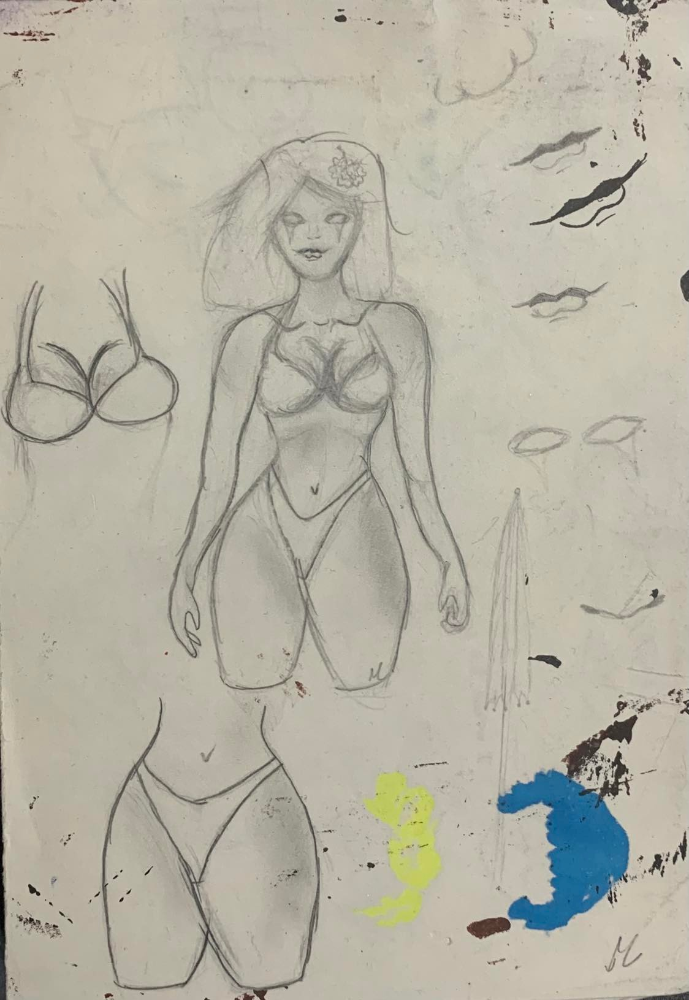
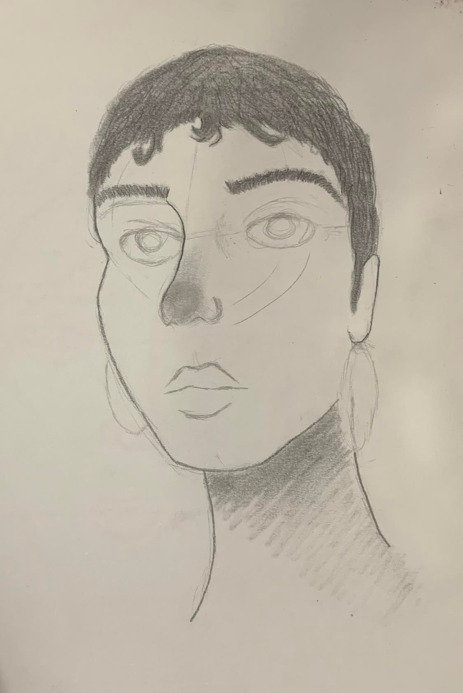
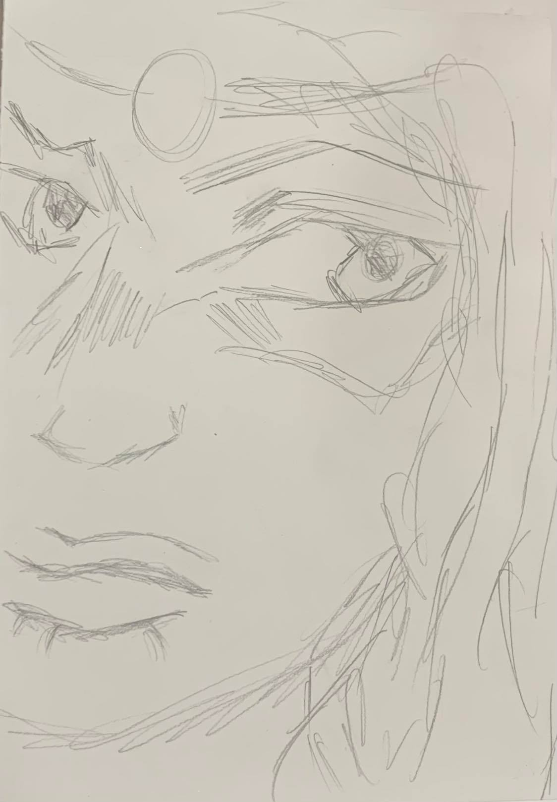
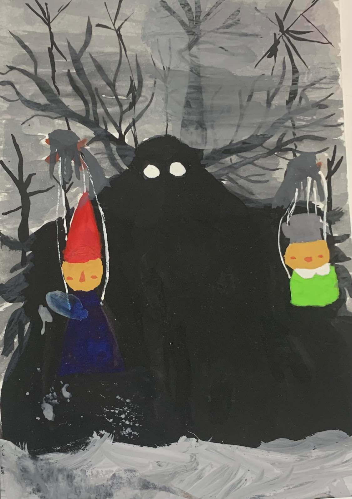

Trabalhos Recentes
| Trabalho | Breve explicação |
|---|---|
|  | "Retrato de Mulher" Reprodução feita com tinta de tecido no papel canson do quadro de Alexei von Javienski, "Retrato de Mulher", Expressionismo. |
|  | "Ochaco Uraraka" Reprodução feita à lápis no papel canson da personagem Ochaco Uraraka do anime Boku no Hero Academia. É sobre a manipulação que a ansiedade faz com nosso cérebro. |
|  | "Curtindo o Verão" Rabisco feito à lápis no papel canson de uma possível skin de praia para a personagem LeBlanc do jogo League of Legends. |
|  | "Eu em outro universo" Desenho feito à lápis no papel canson de mim mesma, porém com um cabelo diferente. |
|  | "Thálassa Pétra" Sketch de um trabalho para a disciplina Direção de Arte. Feito à lápis no papel canson, Thálassa é uma híbrida, metade mulher, metade dragão. |
|  | "A Fera" Trabalho para a disciplina Direção de Arte. Desenho em aquarela do personagem "A Fera" do desenho animado O Segredo Além do Jardim. |